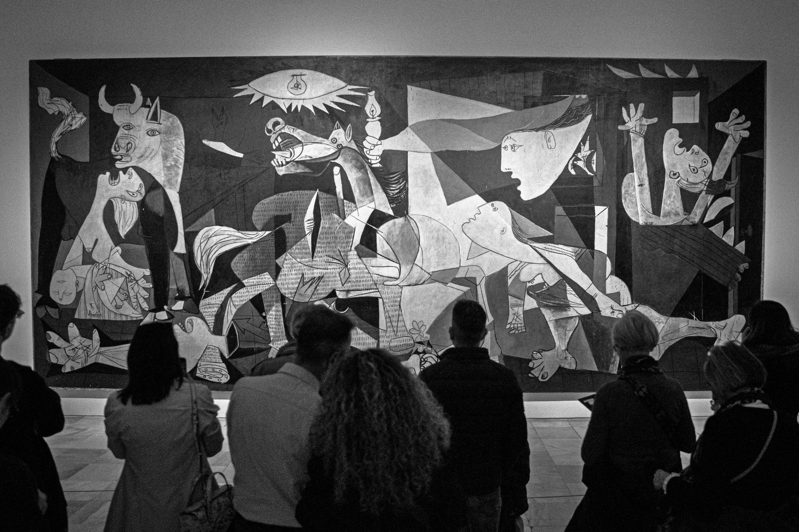
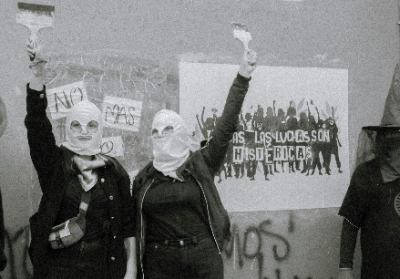
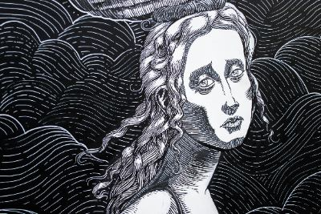
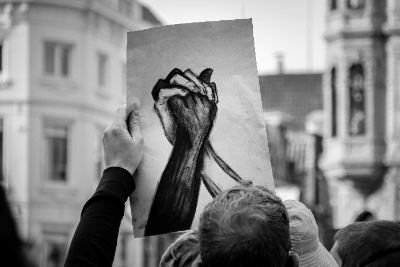
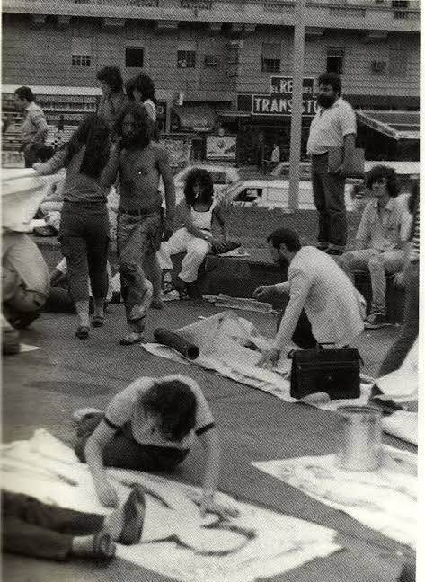
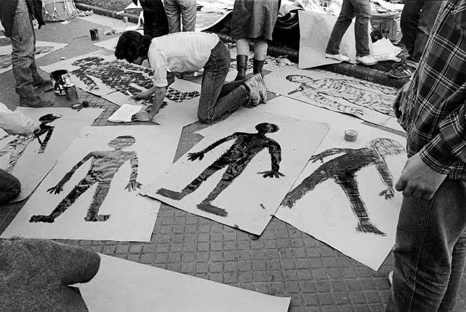
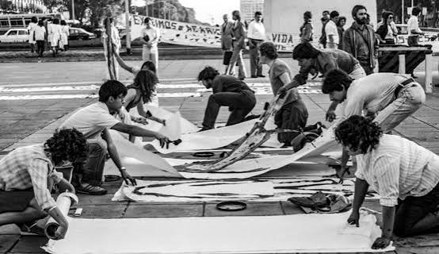
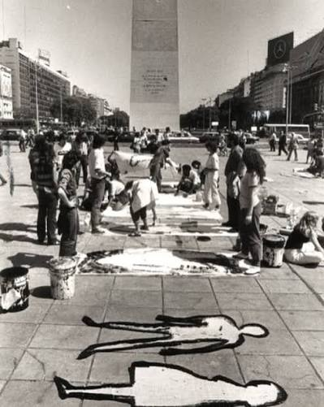
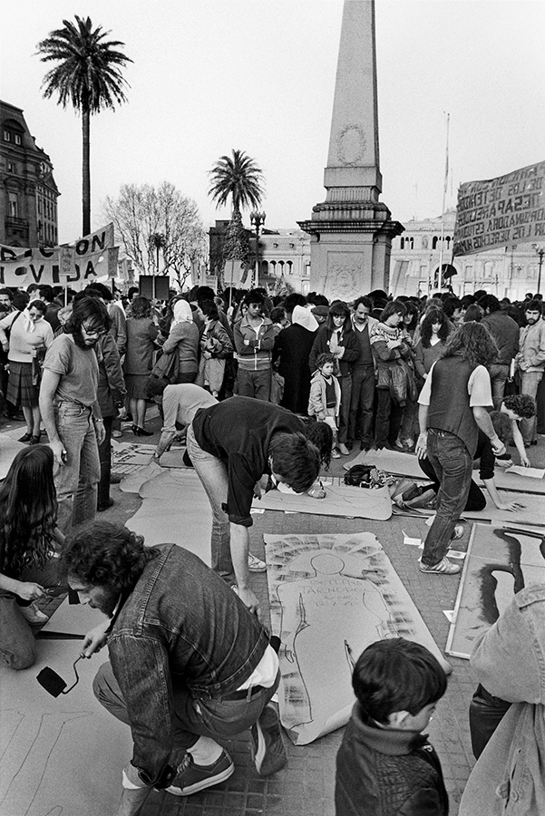

La necesidad de usar la expresión plástica como una herramienta de denuncia no es una novedad del siglo XXI. A lo largo de la historia, los momentos de mayor tensión social y política han empujado a los creadores a abandonar la búsqueda de la mera belleza estética para transformar sus obras en testimonios de resistencia. El ejemplo más emblemático de este cruce es el Guernica (1937) de Pablo Picasso, una pieza maestra que nació no para decorar un museo, sino para gritarle al mundo el horror y la crueldad de los bombardeos fascistas sobre la población civil española.

Durante el siglo XX, movimientos como el dadaísmo europeo y el muralismo mexicano de Diego Rivera y David Alfaro Siqueiros consolidaron la idea de que el arte debía pertenecer al pueblo y no a las élites. Los artistas mexicanos, en particular, llevaron la pintura a los grandes edificios públicos para educar e inspirar a una población mayoritariamente analfabeta tras la revolución. Este quiebre histórico demostró que una pared pintada podía tener tanto peso político e informativo como un periódico o un discurso oficial.
Con la llegada de los movimientos sociales de los años 60 y 70, la palabra "artivismo" comenzó a tomar su forma actual, fusionando el lenguaje estético con la acción directa en el espacio público. Desde las siluetas que reclamaban por los desaparecidos en las dictaduras del Cono Sur hasta las intervenciones callejeras del colectivo ACT UP en Nueva York frente a la crisis del VIH, el arte demostró que su mayor poder radica en su capacidad de sensibilizar y visibilizar lo que el poder intenta ocultar.



A mediados del siglo XX, el artivismo encontró en el espacio público su mejor canal de comunicación interactiva frente a la censura de los medios tradicionales. En periodos de alta conflictividad política, la necesidad de informar de manera urgente dio nacimiento a movimientos de pegatinas de afiches y a brigadas muralistas que pintaban de forma clandestina durante la noche. Estas intervenciones rápidas usaban colores planos, tipografías gruesas y mensajes directos para que cualquier ciudadano que caminara hacia su trabajo pudiera enterarse de las demandas sociales en pocos segundos.
Este fenómeno tuvo una fuerza descomunal en Sudamérica. Experiencias históricas como la Brigada Ramona Parra en Chile o el "Siluetazo" en Argentina durante los años 80 demostraron que el arte callejero podía transformarse en un espacio de resistencia contra el olvido. Al poner el cuerpo en la calle para pintar las demandas de una sociedad, los artistas no solo comunicaban una postura política, sino que creaban un lazo de empatía inmediata con los vecinos que protegían y colaboraban de forma anónima con las brigadas.





Con el fin del siglo XX y la llegada del nuevo milenio, el artivismo mutó junto con las subculturas urbanas. La introducción de técnicas de reproducción masiva como el stencil (estarcido), los stickers y los pósteres modificó la velocidad del mensaje callejero. Artistas globales comenzaron a mezclar la ironía de la cultura pop con la crítica ácida al consumo y a la destrucción del medio ambiente, transformando los centros financieros de las grandes ciudades en museos a cielo abierto que interpelaban directamente al transeúnte apurado.
Hoy en día, la historia del arte comprometido escribe un capítulo completamente nuevo gracias a la tecnología. El artivismo actual ya no se limita a la superficie física de una pared de ladrillos; dialoga constantemente con plataformas digitales, códigos QR integrados en los diseños y realidades aumentadas que expanden el mensaje a través de los teléfonos celulares. Esta transición demuestra que, aunque las herramientas cambien y evolucionen desde el óleo tradicional hasta los píxeles, el motor original sigue intacto: usar la comunicación visual para despertar conciencias y transformar la sociedad de manera colectiva.